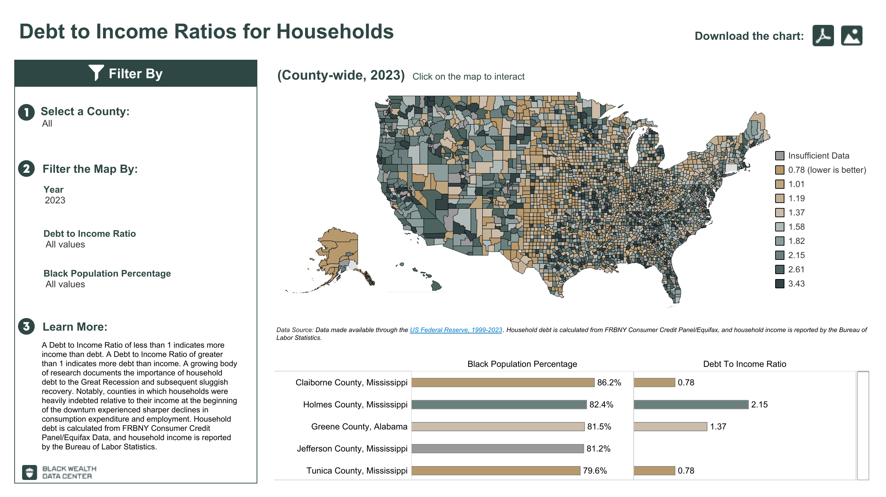

Explore Cities by Racial Wealth Gap

Welcome to “The Racial Wealth Gap: A Journey Through Generations.”
In America, wealth isn’t just currency — it’s opportunity, security, influence. For Black Americans, that road is barricaded by systemic barriers spanning generations.
Scroll down to uncover the roots of these disparities, witness where they bite deepest, and glimpse the fight for change.
This isn’t cold data. This is resilience, loss, policy, and power — alive and evolving.
Understanding the historical foundation of the racial wealth divide.
Researchers digitized Census data from 1860 and 1870, capturing early post-Emancipation Black wealth records. The racial wealth gap stood at nearly 60 to 1.
50 years of Southern state tax returns were digitized to reconstruct Black wealth data post-slavery, filling gaps in historical economic records.
By this year, the white-to-Black wealth gap had narrowed to 10 to 1. Progress was made, but slower than if Black Americans had equal savings and capital gains opportunities.
Historical estimations were verified using available data from the 1930s, ensuring accuracy in the reconstructed wealth data from prior decades.
The racial wealth gap reduced to 7 to 1. Yet, structural racism, segregation, and suppressed capital gains kept the gap wider than it would be under equality of savings.
The only period where the wealth gap closed faster than expected under equal savings rates. The civil rights movement, labor protections, and social safety nets bolstered Black wealth accumulation.
Surveys of wealth by racial identity began in the 1980s, with the Survey of Consumer Finances (SCF) filling in mid-20th century to modern data. Progress on closing the wealth gap largely stalled.
Today, the Black-white per capita wealth ratio remains at approximately 6 to 1. Had savings and capital gains been equal, the gap would have been 3 to 1.